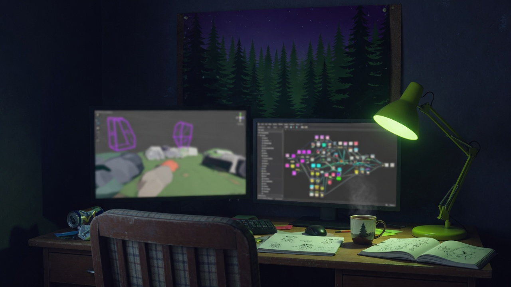

About me
Learning games
in Unreal

I work as oTTeuM sTudio. I used to introduce myself as a 3D artist and CGI specialist. That work still matters — clean topology, UVs, PBR, and game-ready meshes. The new job is learning Unreal Engine as a beginner game developer.
I built hard-surface and organic models for games, real-time apps, and visualization: props, environments, characters. I cared about files that drop into a pipeline without extra cleanup. Now I want those files to live inside a level I can walk through, with lighting I authored and logic I wrote.
Daily tools used to be Blender (and earlier, Fyrox). I also spent time on Godot shaders and Rust — I am writing my own 3D modeler in system-level Rust. oTTeCAD, that editor, now runs on this site. Unreal Engine 5 is the engine I am committing to for the next stretch: Blueprints, C++, blockouts, materials, and atmosphere.
- Studio
- oTTeuM sTudio
- Location
- Slovenia, EU
- Was
- 3D artist · game-ready assets
- Is
- Unreal Engine game dev beginner
What I carry over